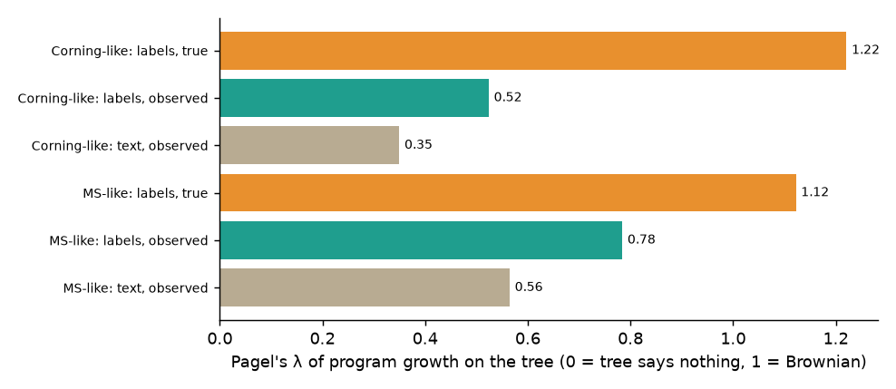
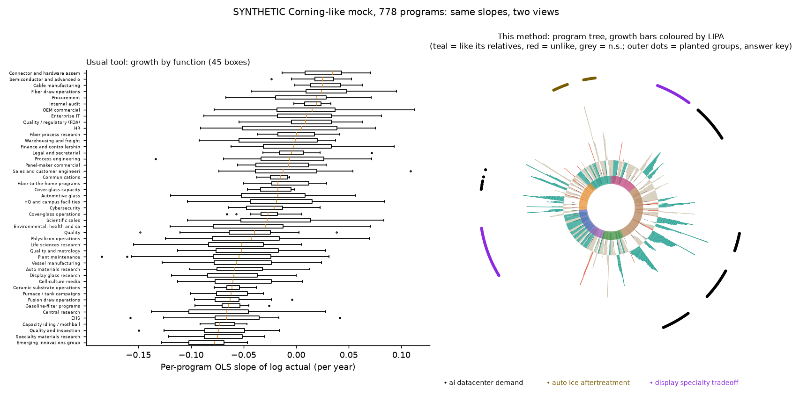
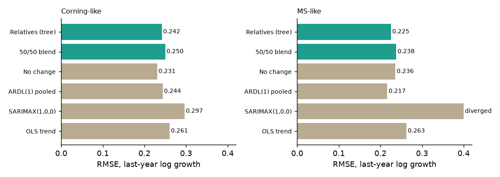
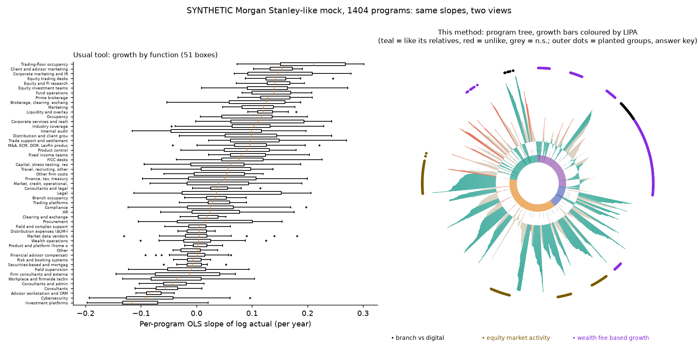
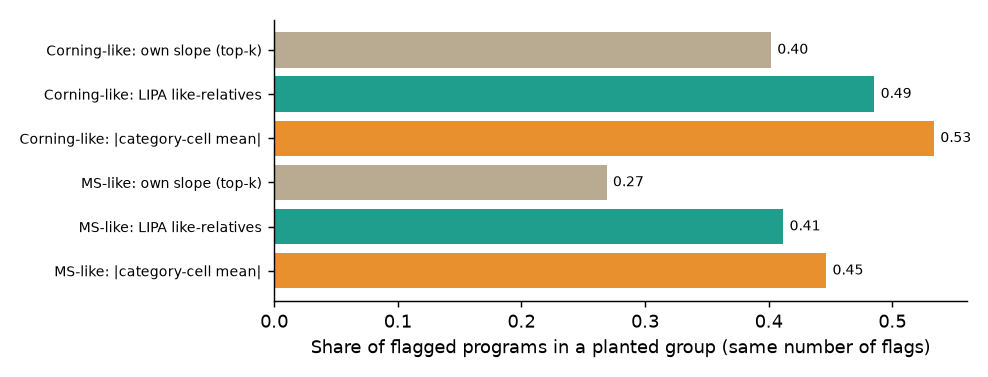

👍 go ahead · 👎 drop · or just comment what you think
Notation
Symbol
Meaning
Here
\(\mathcal T\)
rooted tree with branch lengths; tips are species
label tree: segment → subsegment → function → stated intent → program, unit branches (ultrametric); or a text tree from descriptions
\(y_i\)
trait value at tip \(i\)
program \(i\)'s OLS slope of log actual spend per year (FY2020–25 or FY2021–25)
\(C\)
shared-path matrix: \(C_{ij}\) = branch length from root to the most recent common ancestor of \(i,j\)
\(C_{ij}\) = number of shared levels (0–4) plus 1 on the diagonal
\(W=(w_{ij})\)
phylogenetic proximity, \(w_{ii}=0\)
patristic proximity (inverse tree distance), rows sum to 1
\(\lambda\)
Pagel's multiplier on off-diagonal \(C\)
how much of growth covariance follows the hierarchy
\(K\)
Blomberg's ratio of observed to Brownian-expected tree-structured variance
\(K\approx1\) Brownian; \(K\to0\) no signal; \(K>1\) relatives more alike than Brownian
\(I_i\)
local Moran's I (LIPA) at tip \(i\)
positive: program grows like its relatives; negative: unlike them
Assumptions
The tree is given, not estimated from the trait. Here it is the stated hierarchy (or a text clustering), which is exactly what Q2 wants to test against the numbers.
Model-based indices (K, λ) assume Gaussian traits with covariance proportional to shared path length (Brownian motion on the tree). Unit branch lengths make that "each shared level adds the same covariance".
The trait is measured without error. Here it is not: a 5–6-point slope has sampling error, which is the source of the attenuation in finding 1 (the Math avenue relaxes this).
Permutation tests assume tips are exchangeable under "no signal".
Abouheif's \(C_{\mathrm{mean}}\) is Moran's \(I\) with Abouheif's proximity (based on node counts); \(\hat\mu=\mathbf1^\top C^{-1}y/\mathbf1^\top C^{-1}\mathbf 1\) is the GLS root mean.
Why it works, step by step
Step 1 · what λ does to the covariance\(\lambda=1\) keeps the full tree covariance: two programs with the same function and stated intent share 4 of the 5 root-to-tip levels, so \(\mathrm{Cov}=4\sigma^2\) against variance \(5\sigma^2\) (correlation 0.8). \(\lambda=0\) zeroes all off-diagonal terms (a star tree: no shared growth). For two siblings the implied correlation is \(4\lambda/5\), so \(\hat\lambda=0.52\) means the hierarchy predicts a sibling correlation of about 0.42 (computed), against 0.98 at \(\hat\lambda=1.22\) on noise-free growth.
Step 2 · why measurement noise pulls λ downWrite observed slope \(y_i=\theta_i+e_i\), with true \(\theta\sim N(\mu\mathbf1,\sigma^2 C_{\lambda_0})\) and independent \(e_i\sim N(0,s^2)\). On an ultrametric tree every diagonal entry of \(C\) is the root-to-tip length \(d\) (here 5), so
$$\mathrm{Var}(y)=\sigma^2\lambda_0 C+\big(\sigma^2(1-\lambda_0)d+s^2\big)I .$$
Matching this to \(\sigma_y^2 C_\lambda=\sigma_y^2\big(\lambda C+(1-\lambda)dI\big)\): the diagonal gives \(\sigma_y^2 d=\sigma^2 d+s^2\), the off-diagonal gives \(\sigma_y^2\lambda=\sigma^2\lambda_0\), so
$$\lambda=\lambda_0\,\frac{\sigma^2 d}{\sigma^2 d+s^2}=\lambda_0\times\text{reliability of one program's slope}.$$
The drop from 1.22 to 0.52 implies a reliability of about 0.43 on the Corning-like book, and 0.78/1.12 ≈ 0.70 on the MS-like book (computed, under this model).
Step 3 · K as a variance ratioUnder Brownian motion, \(\mathrm{MSE}_0\) (ignores the tree) is inflated by shared ancestry relative to \(\mathrm{MSE}\) (uses \(C^{-1}\)), by exactly the factor \(\mathbb E_{\mathrm{BM}}\). Dividing by it gives \(\mathbb E[K]\approx1\) under Brownian motion — the property we reproduced (mean 1.03 over 200 trees).
The null and multiple testing
K, I, \(C_{\mathrm{mean}}\): 999 permutations of trait values across tips (phylosignal); λ: the p-value returned by phyloSignal with the same 999 repetitions.
LIPA: 999 conditional permutations per tip, two-sided; no multiplicity correction (as in the package) — 338 and 847 tips at p < 0.05 against about 39 and 70 expected by chance (computed, 5% of tips).
Scoring against the answer key uses AUC; no p-values claimed for those.
Toy example (computed by cards/_toys/toys.py)
Tree ((p1, p2), (p3, p4)), sister-only weights; slopes 0.10, 0.08, −0.02, 0.06 (mean 0.055). Standardized values z = 0.988, 0.549, −1.646, 0.110; each sister's z: 0.549, 0.988, 0.110, −1.646. Local I = z × sister z = 0.542, 0.542, −0.181, −0.181; global Moran's I = 0.181. Program minus sister: 0.02, −0.02, −0.08, 0.08. So p3 and p4 differ from each other by 0.08, four times more than p1 and p2, yet their local I is only −0.181 because p4 sits near the overall mean — the reason LIPA missed mismatches that a "program minus relatives" gap finds.
How it differs from the standard tool. The usual view is a box per category and an ANOVA R², which treats categories as flat, unrelated groups and says nothing about single programs. Phylogenetic signal uses the whole nesting: programs that share more levels are expected to be more alike, with one parameter (λ) for how much, a Brownian benchmark (K = 1) and a per-program local index. ANOVA asks "do category means differ"; λ asks "does covariance fall off with distance in the hierarchy", and it can be corrected for measurement error (top pick), which R² cannot without a model.
Followed: Keck, Rimet, Bouchez & Franc (2016), Ecology and Evolution 6(9):2774–2780 (abstract, Table 1 and the LIPA section read via the publisher page; equation numbers not checked — the LIPA formula above is Anselin's local Moran's I as cited there); phylosignal 1.3.1 manual for phyloSignal and lipaMoran (read). K: Blomberg, Garland & Ives (2003); λ: Pagel (1999) — both cited via Münkemüller et al. (2012), not read; the K formula is as implemented in phylosignal/phytools (our K agrees with phytools to 3×10−12). Toy: cards/_toys/toys.py.
What we found
Pagel's λ: true vs observed vs text tree

Program tree, Corning-like

Finding 1
Noise hides most of the growth the tree explains.
On the label tree (segment > subsegment > function > stated intent), Pagel's λ of per-program growth is 0.52 on observed actuals vs 1.22 on noise-free growth (Corning-like), and 0.78 vs 1.12 (MS-like). Blomberg's K falls 91% (4.54 → 0.40) and 64% (1.50 → 0.54). All four indices p = 0.001 (999 permutations).
Standard comparison: ANOVA R² of slope on function is 0.45 vs 0.96 noise-free (Corning-like) and 0.59 vs 0.85 (MS-like). λ and K say the same thing in a form that also handles nested levels and gives per-node and per-program versions. λ > 1 is allowed by the estimator.
Finding 2
Descriptions carry less growth signal than the labels.
A tree from the descriptions (TF-IDF, average linkage; every sentence with numbers, dollars, actuals or budget words removed, about 40% of words) gives λ 0.35 (Corning-like) and 0.57 (MS-like) vs 0.52 and 0.78 on the label tree; K is not significant on the text tree (p = 0.46 and 0.15).
The descriptions leak numeric history ("actuals have risen from $4.76 million…"); without the scrub the text tree would be measuring the numbers. On these mocks, the words add nothing beyond the categories they were generated from.
RMSE by method, both mocks

Program tree, MS-like

Finding 3
Borrowing from relatives beats a per-program trend, but not a pooled ARDL.
One-step walk-forward of last-year log growth: a relatives-weighted mean of last observed growth (patristic weights on the label tree) has RMSE 0.242 vs OLS trend 0.261 (−7.2%, Corning-like) and 0.225 vs 0.263 (−14.3%, MS-like); pre-registered bar −5% passed. Pooled ARDL(1): 0.244 and 0.217. "No change": 0.231 and 0.236. Per-program SARIMAX(1,0,0): 0.297, and diverged on some MS-like programs.
Against noise-free growth the relatives' mean is best on the MS-like book (0.110 vs ARDL 0.137, OLS 0.139) but "no change" wins on the Corning-like book (0.103 vs 0.125). Not a forecasting method; the benchmark checks that borrowing is real.
Finding 4
LIPA does not flag text-vs-numbers mismatches or category drift.
"Says growth, actually declining": negative LIPA AUC 0.59 (Corning-like, 6 planted) and 0.53 (MS-like, 25) vs a plain OLS slope 0.74 and 0.65. Category drift (LIPA early minus late window): AUC 0.55 and 0.47 for any drift. One cell passed the pre-registered bar (MS-like "says transform, actually run": 0.71 vs best comparator 0.58), but the same type on the Corning-like book is 0.48; read as chance among 10 cells.
LIPA multiplies a program's deviation by its relatives' deviation, so a program near the overall mean scores near zero even when it differs from its siblings (see the toy).
Share of flags in a planted group

Program tree, Corning-like
Finding 5
LIPA finds planted co-moving groups, but a category-cell flag does as well.
Programs with significant positive LIPA (like their relatives): 311 of 778 and 777 of 1,404. Share of them in a planted co-moving group: 0.49 and 0.41, vs 0.40 and 0.27 for the same number of largest own slopes; but flagging the most extreme function × intent cell means (either direction) gives 0.53 and 0.45.
Added after seeing results (not pre-registered). The mocks place planted groups by archetype, so category cells are a strong baseline (the 11-18 STEM run found the same).
Who plays what
Home field (comparative biology)
Our data (Q2, SYNTHETIC)
Species
Program (budget line)
Phylogeny
Stated hierarchy: segment → subsegment → function → stated intent (label tree); or a clustering of the descriptions (text tree)
Trait (body size, pollution sensitivity)
Per-program growth: OLS slope of log actual spend
Phylogenetic signal
How much growth is shared with programs in the same branch of the hierarchy
LIPA hotspot / outlier species
Program that grows like (or unlike) its close relatives
Within-species measurement error
Sampling error of a 5–6-point slope
Inputs and preprocessing
SYNTHETIC mocks built 2026-11-13 (seed 20261113), /workspace/q2-mock-zbb/output (also in the Drive folder "Q2 mock ZBB datasets (synthetic, 2026-11-13)"): Corning-like 778 of 1,079 programs with all of FY2020–25; MS-like 1,404 of 1,840 with all of FY2021–25. Not either firm's budgets.
Trait: OLS slope of log actual_usd on year; early and late windows (first 3, last 3 years) for drift; noise-free slope from the answer key for comparison only.
Label tree from programs.csv stated fields (45 and 51 functions with balanced programs). Text tree: TF-IDF (1–2-grams, min df 2) of description after removing every sentence that contains a digit, "$", "actual", "budget", "miss", "million", "percent" or a growth verb (about 40% of words), cosine distance, average linkage.
Answer key (ground_truth.json: planted mismatches, drift, latent groups, true levels) used only for scoring.
What we ran
Home field: Brownian motion and white noise on 200 random 100-tip coalescent trees (runs/2026-11-19/phylo/home_repro.R); K checked against phytools.
P1: phyloSignal (Cmean, I, K, λ; 999 reps) on observed, noise-free, early and late slopes, label tree and text tree; ANOVA R² as the standard.
P2: lipaMoran (patristic proximity, two-sided, 999 reps) on the label tree; AUC against planted mismatch types vs OLS slope, within-cell peer z and "program minus relatives".
P3: LIPA on early vs late windows; AUC against planted category drift.
P4: one-step walk-forward of last-year growth: OLS trend, pooled ARDL(1), per-program SARIMAX(1,0,0), no change, relatives-weighted mean, 50/50 blend.
Post hoc (labelled): share of LIPA-positive programs in planted groups vs matched-count baselines.
1 The circle is the hierarchy laid flat: programs sit around it in tree order, so neighbours on the circle are relatives; the inner coloured ring marks segments.
2 Each bar is one program's growth: outward = growing, inward = shrinking (bar starts at the grey baseline ring).
3 Teal bars grow like their relatives (significant positive LIPA); red bars are unlike them; grey are not significant.
4 Teal wedges are branches that move together; a red bar inside a teal wedge is a program out of step with its family.
5 Outer dots mark the planted co-moving groups (answer key) so you can judge the picture; they are not inputs.
What it means for a decision-maker
The org chart explains a good share of which programs grow, but a single program's few years of numbers are noisy enough that you see less than half of the real family resemblance. Borrowing a program's family's recent growth gives a better first guess for next year than its own trend line. The descriptions, once the numbers in them are removed, say less about growth than the categories do. The per-program flag (LIPA) is not a good way to catch programs whose story does not match their spending; comparing each program with its relatives directly, or a plain trend, works better.
Where it breaks
LIPA's product form misses programs near the overall mean (toy); it underperforms simple gaps on mismatch and drift.
Unit branch lengths are an assumption; real budgets would need levels weighted (e.g. by how much variance each level explains).
The text tree on 1,404 tips took 175 s for the four indices with 999 permutations (63 s on the label tree; dense \(n\times n\) matrices).
Per-program SARIMAX on 4–5 points is unstable (diverged on some MS-like programs); reported as a failure, not tuned.
Everything is on SYNTHETIC mocks whose planted groups follow archetypes, which favours category baselines.
What we'd do next
Measurement-error-corrected λ (top pick): use each slope's standard error; target the noise-free λ.
Per-node signal (phyloSignalINT) to say which branches carry shared growth.
Compare tree borrowing with ebnm (11-13) on Q2.1.
Well established for K and λ; LIPA promising but thin
What the home field has established
Indices. Blomberg's K (2003) and Pagel's λ (1999) are standard in comparative biology; Moran's I on trees (Gittleman & Kot 1990) and Abouheif's Cmean likewise (as described in Münkemüller et al. 2012; originals not read).
Simulation benchmark. Münkemüller et al. (2012), Methods in Ecology and Evolution (abstract and Table 1 read): under Brownian motion Cmean and λ performed well and better than Moran's I and K; λ gave a reliable effect size but is costlier; K was best at capturing changing evolutionary rates; sample size affected expected values as well as uncertainty; polytomies and missing branch lengths mattered little. That last point supports our unit-length, polytomy-heavy label tree.
Package. Keck, Rimet, Bouchez & Franc (2016), Ecology and Evolution 6:2774–2780 (abstract, Table 1 and LIPA section read): phylosignal in R and C++, GPL-3, CRAN and GitHub (fkeck/phylosignal); the search index lists 304 citations. We used 1.3.1 from conda-forge.
LIPA. Introduced in that paper as the tree analogue of Anselin's (1995) local Moran's I; we found no independent validation study. Thin.
Known failure modes. Measurement error biases signal downward (Ives, Midford & Garland 2007, Systematic Biology 56:252–270 — abstract via search, not read); λ is costly on large trees (Münkemüller 2012); sample size affects expected values.
Our reproduction
Brownian motion on 200 random 100-tip trees: mean K 1.03 (median 0.77; K is right-skewed), median λ 1.00. White noise: mean K 0.005, median λ 0.00007. Matches the Brownian expectation \(\mathbb E[K]\approx1\) and λ's 0–1 anchors.
phylosignal's K vs phytools phylosig on a 60-tip tree: difference 3×10−12.
Not reproduced: the paper's 17-diatom example (its data were not fetched today).
Found via · web search (query "phylosignal R package local indicator of phylogenetic association LIPA Keck 2016 Ecology and Evolution") 2026-11-19 14:20 ET → Keck et al. 2016, github.com/fkeck/phylosignal. Novelty: exotic-transfer (comparative biology → program hierarchies).
1 · Engineering · Effort M
Linear-time signal on 50,000-program trees
phylosignal builds dense \(n\times n\) matrices; the 1,404-tip text tree took minutes. Tree recursions compute the same quantities in \(O(n)\), so whole-firm books (tens of thousands of lines) and many re-cuts become cheap. Port to Rust/NumPy with phylosignal as oracle.
Math sketch. For Brownian-type covariances, \(\log|C_\lambda|\), \(\mathbf1^\top C_\lambda^{-1}\mathbf1\), \(\mathbf1^\top C_\lambda^{-1}y\) and \(y^\top C_\lambda^{-1}y\) all follow from one post-order pass (each node combines its children's sufficient statistics), giving λ's likelihood and K's two MSEs in \(O(n)\) per evaluation. Moran's I and LIPA with nested-level weights reduce to group sums at each level: \(\sum_j w_{ij}z_j=\sum_\ell a_\ell\,(S_{\ell(i)}-S_{\ell+1(i)})\), with \(S\) the sum of \(z\) in \(i\)'s level-\(\ell\) group.
Why it matters here. Q2 books are hundreds to thousands of programs per firm and need re-running per cycle and per cut; permutation nulls multiply cost by 999.
Closest prior work: Ho & Ané (2014), Systematic Biology 63(3):397–408, linear-time algorithm implemented in phylolm (abstract via search, not read).
Test (pass bar set now). K, λ, I and LIPA within 10−8 of phylosignal on both mocks and both trees; a 50,000-tip label tree with 999 permutations in under 10 s on the box.
2 · Math · Effort M · ★ Top pick
Measurement-error-corrected λ
Give each program its own known noise variance (the slope's standard error) and estimate λ for true growth, separating shared growth from sampling noise.
Math sketch. \(y=\theta+e\), \(\theta\sim N(\mu\mathbf1,\sigma^2C_\lambda)\), \(e\sim N(0,\mathrm{diag}(s_i^2))\) with \(s_i^2\) from each program's OLS residuals (pooled within cell when 3–4 residual degrees of freedom make it unstable). Maximise \(\ell(\mu,\sigma^2,\lambda)\) under \(\mathrm{Var}(y)=\sigma^2C_\lambda+\mathrm{diag}(s_i^2)\). Step 2 of the math tab shows uncorrected λ is \(\lambda_0\) times the reliability; the correction undoes that factor program by program. The same model gives per-program shrunken growth \(\mathbb E[\theta_i\mid y]\), a tree-structured empirical Bayes.
Why it matters here. Observed λ is 0.52 vs 1.22 noise-free (Corning-like) and 0.78 vs 1.12 (MS-like): most of the "real change vs noise" question (Q2.3) is in this gap.
Closest prior work: Ives, Midford & Garland (2007), Systematic Biology 56(2):252–270 (measurement error in signal and regression; abstract via search, not read). No application to budget hierarchies found.
Test (pass bar set now). Corrected λ within 0.15 of the noise-free λ on both mocks (gaps now 0.70 and 0.34); on the years-shuffled mocks corrected λ ≤ 0.10. Also 2025 log-level RMSE of the shrunken estimates below ebnm's (0.108, 0.109 from 11-13).
3 · New use on our data · Effort S
Tree-borrowed growth for Q2.1
Use the hierarchy, not one flat cell, to borrow strength: each program's growth estimate leans on siblings first, then cousins.
Math sketch. BLUP under \(C_{\hat\lambda}\): \(\hat\theta=\hat\mu\mathbf1+\hat\sigma^2C_{\hat\lambda}(\hat\sigma^2C_{\hat\lambda}+\mathrm{diag}(s_i^2))^{-1}(y-\hat\mu\mathbf1)\); the relatives' mean in finding 3 is a crude version (fixed weights, no noise model).
Why it matters here. The crude version already beats a per-program trend by 7–14%; ebnm (11-13) borrows within segment × function only and was worse for programs alone in their group (0.110 → 0.120).
Closest prior work: ebnm on these mocks (11-13 edition); phylogenetic prediction of missing traits in comparative biology (literature not checked today).
Test (pass bar set now). 2025 log-level RMSE ≥ 5% below ebnm on both mocks, and no worse than ebnm for programs alone in their segment × function cell. Null: the same estimator on a tree with tips shuffled.
Q2.3 · Real change or noise
The hierarchy explains much more of noise-free growth than of observed growth (λ 1.22 vs 0.52 Corning-like; 1.12 vs 0.78 MS-like), which implies a single program's 5–6-year slope has a reliability of roughly 0.4–0.7 (computed, Brownian model). The top pick turns this into a correction.
Q2.1 · Borrowing strength
Relatives' recent growth beats a per-program trend for next-year growth by 7% and 14% (pre-registered bar 5%), though pooled ARDL(1) matches it and "no change" wins on the Corning-like book.
Q2.2 · Text vs numbers
Two answers. The scrubbed descriptions carry less growth signal than the stated labels (λ 0.35 vs 0.52; 0.57 vs 0.78). LIPA does not find "says growth, actually declining" or category drift (AUCs near 0.5); a plain slope or a program-minus-relatives gap is better.
Q2.4 / Q2.5 · Structure and seeing it
The tree view shows 1,000+ programs at once with family structure visible, but as a group finder it does no better than flagging extreme category cells (precision 0.49 vs 0.53; 0.41 vs 0.45).
Still missing: real program-level budgets, actuals, headcount and decision packages for any firm; everything here is on the SYNTHETIC mocks. · All questions
Full tables, code and data notes: the 2026-11-19 edition · scripts in runs/2026-11-19/ · card sources in cards/phylo-signal/.